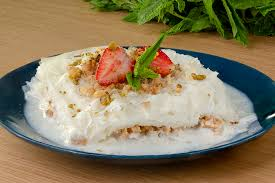
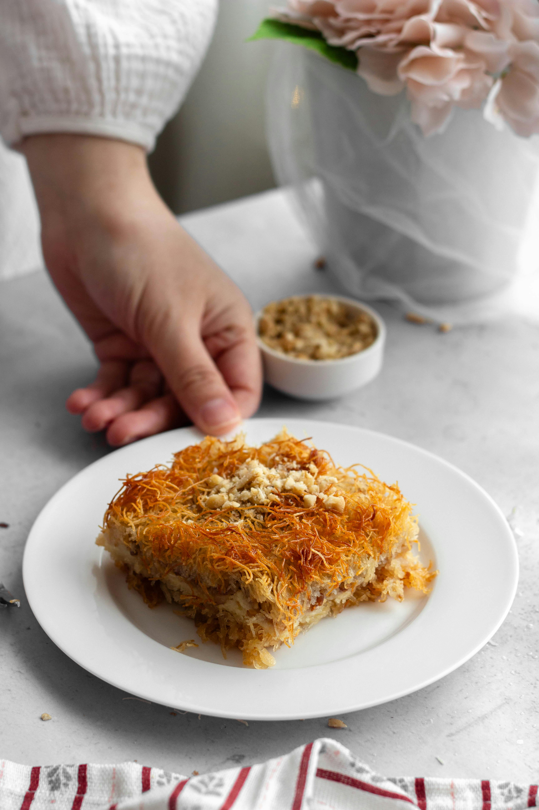

Tatlı Tarifleri

Baklava
Çıtır yufkalarla hazırlanan şerbetli klasik tatlı.
Şerbetli, çıtır ve tatlı!

Dondurma
Serinletici, süt bazlı geleneksel yaz tatlısı.
Serinletici ve lezzetli!

Güllaç
Sütle ıslatılmış yapraklarla yapılan hafif tatlı.
Hafif ve sütlü bir tat!

Kadayıf
Tel hamur ve cevizle hazırlanan şerbetli tatlı.
Cevizli ve şerbetli bir tat!
Pankek
Kahvaltılık mini krep tatlısı, meyveyle nefis.
Tatlı ve pratik!

Sütlaç
Pirinç ve sütle yapılan geleneksel fırın tatlısı.
Klasik sütlü tatlı!